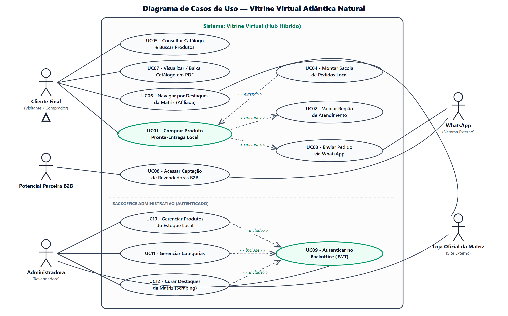
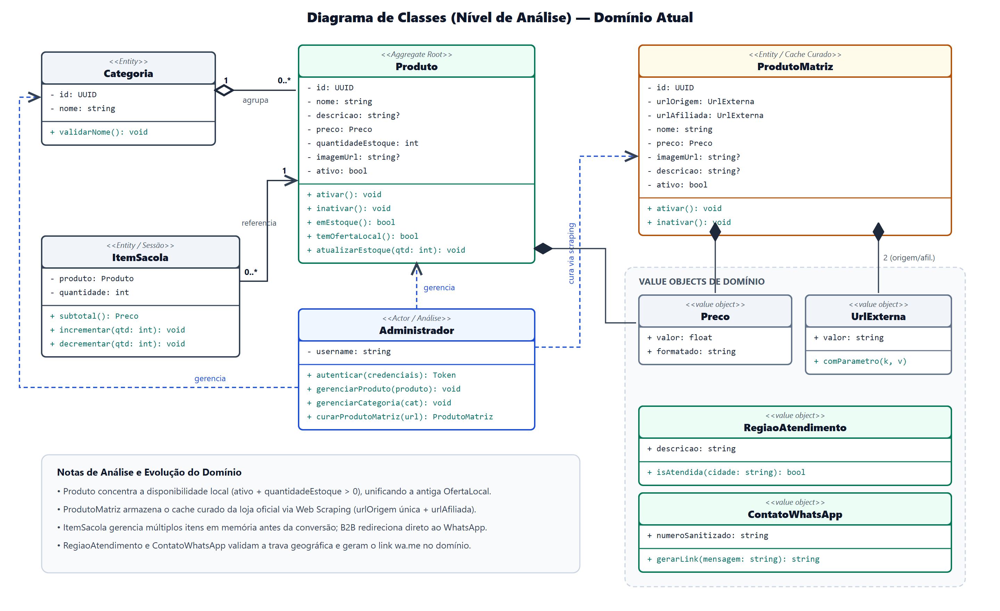
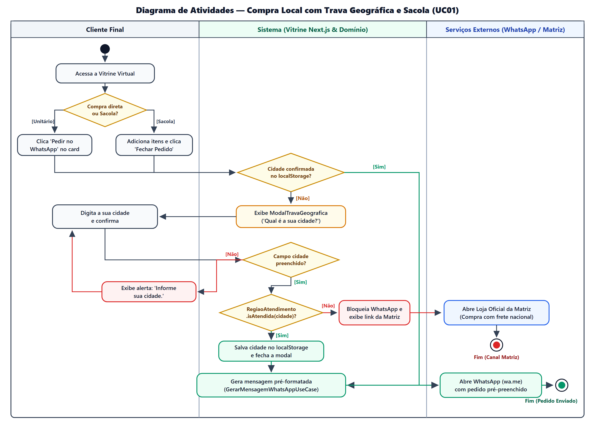
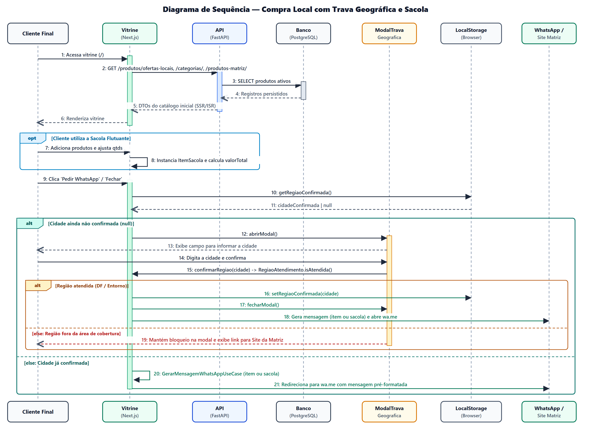

Modelagem Detalhada
Vitrine Virtual — Atlântica Natural
Revisão da 1ª Fase (com destaques), Diagrama de Classes, Diagrama de Atividades e Diagrama de Sequência
Antônio Prado Horta • Luiz Henrique Reis • Pedro Henrique de Freitas Frogeri
CEFET-MG Campus Varginha • Laboratório de Engenharia de Software
Sumário da Apresentação
Clique em qualquer tópico para ir diretamente ao slide correspondente.
1. Minimundo (Contexto e Revisão)
Revisado da 1ª FaseA revendedora autorizada da Atlântica Natural atua de forma dispersa entre vendas de estoque físico (pronta-entrega local no DF/Entorno), indicação de produtos da loja matriz (afiliada) e captação de novas parceiras (B2B) via WhatsApp.
Problemas Atuais:
- Falta de catálogo centralizado para consulta rápida de preços e disponibilidade em estoque local.
- Pedidos de pronta-entrega vindos de regiões fora da área de entrega da revendedora.
- Links de produtos da loja matriz e material de catálogo perdidos em conversas e redes sociais.
Solução Implementada (com correções destacadas):
- Corrigido Trava Geográfica sob demanda + Sacola Flutuante: o cliente navega, pode montar uma sacola com múltiplos itens e, ao clicar para pedir no WhatsApp, uma modal valida sua cidade antes de liberar o envio pré-formatado.
-
Corrigido
Destaques da Matriz curados por Scraping: a administradora importa produtos da matriz
pela URL, gerando cache local (
produtos_matriz) com link de afiliada. - Corrigido Captação B2B sem formulário próprio: área dedicada redireciona interessadas diretamente ao WhatsApp da liderança, mantendo o sistema sem checkout nem persistência de leads.
2. Requisitos Funcionais (RF01–RF06)
Destaques de Correção| ID / Status | Descrição |
|---|---|
| RF01 | Exibir catálogo de produtos físicos ativos e com estoque local disponível para pronta-entrega na vitrine principal. |
| RF02 Corrigido | Validar região de atendimento sob demanda via Modal de Trava Geográfica (com
validação de cidade e persistência em localStorage) antes de liberar o WhatsApp. |
| RF03 | Redirecionar o cliente autorizado para o WhatsApp (wa.me) com mensagem pré-formatada
(item único ou resumo da sacola + cidade). |
| RF04 Corrigido | Bloquear redirecionamento ao WhatsApp local para cidades fora da cobertura, exibindo aviso e link alternativo para compra com frete no site oficial da matriz. |
| RF05 Corrigido | Curar e exibir destaques da loja matriz por extração via URL (Web Scraping), armazenando cache com link de afiliada (antes descrito como "links estáticos"). |
| RF06 Corrigido | Disponibilizar seção exclusiva de captação B2B com redirecionamento direto para o WhatsApp da liderança (sem formulário interno). |
2. Requisitos Funcionais (RF07–RF12)
Alinhado ao Sistema| ID / Status | Descrição |
|---|---|
| RF07 | Restringir o acesso ao painel administrativo (Backoffice) a usuário autenticado via token JWT
(POST /admin/login). |
| RF08 Corrigido | Permitir gerenciamento completo do estoque local no Backoffice: cadastrar, editar, inativar
(exclusão lógica) e enviar imagem do produto (upload-imagem). |
| RF09 | Controlar disponibilidade automática na pronta-entrega, exibindo apenas itens com
ativo = true e quantidade_estoque > 0. |
| RF10 | Permitir o gerenciamento das categorias de produtos (criar, listar, editar e excluir). |
| RF11 | Disponibilizar visualização em tela (/catalogo) e download direto do catálogo oficial da
marca em formato PDF. |
| RF12 Novo | Permitir montagem de Sacola Flutuante (múltiplos itens e ajuste de quantidades) e
busca, filtro por categoria e ordenação por preço em /produtos. (Substitui o antigo
RF12 opcional não implementado.) |
3. Requisitos Não Funcionais (RNF)
Os três requisitos não funcionais mais críticos para a vitrine virtual:
- [RNF01] Usabilidade (Mobile-First): Interface projetada para smartphones, com CTAs amplos, suporte a tema claro/escuro e validação ágil de cidade na modal de trava geográfica.
-
[RNF02] Segurança (JWT + Middleware):
Rotas administrativas na API FastAPI protegidas por Bearer JWT e páginas
/admin/*blindadas no Next.js com cookiesHttpOnly. - [RNF03] Desempenho (SSR / ISR): Página principal renderizada no servidor com revalidação incremental a cada 60 segundos, garantindo carregamento ágil em conexões móveis 4G.
4. Diagrama de Casos de Uso (DCU)
Corrigido na 2ª FaseAdministradora --|> Cliente; (3) Corrigido <<include>> a partir de
UC01; (4) Adicionados UC04 (Sacola), UC11 (Categorias) e
UC12 (Curadoria da Matriz).

🔍 Clique para ampliar5. Descrição de Caso de Uso — Fluxo Principal
Atualizado para Modal + SacolaUC01 — Comprar Produto Pronta-Entrega Local
| Ator(es) | Principal: Cliente Final | Secundários: WhatsApp, Loja Oficial da Matriz |
| Pré-condição | O cliente acessou a vitrine pública e o(s) produto(s) selecionado(s) possuem ativo = true
e quantidade_estoque > 0. |
| Fluxo Principal |
|
5. Descrição de Caso de Uso — Exceções e Pós-condição
AtualizadoUC01 — Comprar Produto Pronta-Entrega Local
| Fluxo Alternativo |
[2a] Cidade já confirmada anteriormente: O Sistema recupera a cidade do
localStorage, omite a modal (passos 3–5) e vai direto ao envio no WhatsApp.[5a] Cidade fora da área de cobertura: A modal permanece aberta, o redirecionamento ao WhatsApp local fica bloqueado e o Sistema exibe orientação com link para "Comprar com frete no Site Oficial da Marca". |
| Subfluxo | [4a] Campo de cidade vazio: Ao tentar confirmar sem informar a cidade, o Sistema exibe o alerta "Por favor, informe sua cidade." e impede a validação. |
| Pós-condição | Cidade persistida no navegador para novas compras e atendimento iniciado no WhatsApp (ou cliente direcionado à loja oficial da matriz com frete nacional). |
6. Diagrama de Classes — Nível de Análise
Modelagem estrutural alinhada ao domínio real implementado no backend e no frontend.
Entidades Principais
- Produto (Aggregate Root): centraliza preço, estoque e disponibilidade local
(
emEstoque(),temOfertaLocal()), unificando a antiga classe conceitualOfertaLocal. - Categoria: agrupa produtos locais (
1para0..*). - ProdutoMatriz: cache curado via Web Scraping com
urlOrigemúnica eurlAfiliada. - ItemSacola: entidade de sessão no frontend para pedidos multi-item
(
subtotal()). - Administrador: classe conceitual de análise responsável por gestão e curadoria no Backoffice.
Value Objects & Simplificações
- Preco: encapsula valor não negativo e formatação monetária.
- UrlExterna: valida protocolo
http/httpse injeta parâmetro de afiliado. - RegiaoAtendimento: encapsula a regra de cidades atendidas (DF e Entorno).
- ContatoWhatsApp: sanitiza telefone e gera URL
wa.mecodificada. - Decisão Sem classe/tabela
LeadB2B: captação B2B redireciona diretamente ao WhatsApp da liderança.
6. Diagrama de Classes — Visão Gráfica
Modelagem Atualizada
🔍 Clique para ampliar7. Diagrama de Atividades (UC01)
Com Raias UMLlocalStorage, validação condicional de campo e
cobertura regional, além de dois desfechos externos distintos (WhatsApp local ou loja oficial da matriz).

🔍 Clique para ampliar8. Diagrama de Sequência (UC01)
Opção B — Compra LocalCliente, Next.js SSR/Client,
FastAPI, PostgreSQL, ModalTravaGeografica, LocalStorage e
WhatsApp/Matriz), com fragmentos combinados opt (uso opcional da sacola) e
alt aninhados (cidade salva vs. validação geográfica permitida ou bloqueada).

🔍 Clique para ampliar9. Rastreabilidade Completa do Sistema
Consistência ponta a ponta entre requisitos, modelagem UML e código em produção.
Requisitos & DCU
12 RFs e 3 RNFs prioritários alinhados aos 12 Casos de Uso no diagrama (vitrine pública, sacola, trava geográfica, PDF, B2B e backoffice JWT).
Classes & Domínio
Entidades Produto, Categoria, ProdutoMatriz e
ItemSacola apoiadas por Value Objects imutáveis e 3 tabelas reais no PostgreSQL.
Comportamento
Diagramas de Atividades e Sequência validando exatamente o fluxo real de compra local com trava geográfica em modal, sacola flutuante e conversão no WhatsApp.
Obrigado pela atenção!
Dúvidas e demonstração dos diagramas disponíveis para consulta (clique em qualquer diagrama para ampliar).